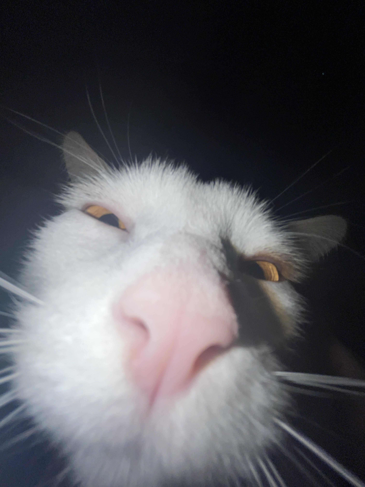
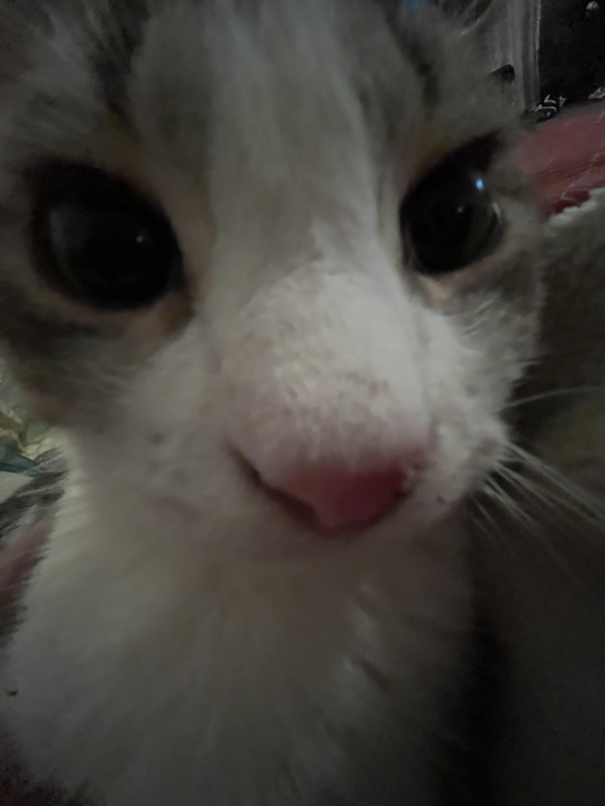

Aiden has 3 cats at home, Abbie, Jupiter, and Little Kitty. He also have a pretty big family with 5 siblings. 1 sister and 5 brothers who all still live with him.
Jupiter is Aiden's favorite cat is he is photogenic and really soft. Jupiter is a very loving cat who always shows affection to everyone and never scratches, hisses, bites, or causes any sort of harm to everyone. He loves sleeping with his favorite stuffed lamb. Jupiter knows his own schedule from when he wakes up, eats, and sleeps again every day.
Yes his name is really "Little Kitty" there is a story behind the name and that story is just that no one could think of a good name for him. Pretty funny to think about calling his name and just saying little kitty. Soon he won't be so little but still have the name. Unlike Jupiter, Little Kitty is a very shy cat who rarely goes around when company is near. He loves to roam at night and he is more lovey at night or really early in the morning
Aiden has a tiktok account that he has been working on for 3 years. He strives to be a content creator and is possibly going to move over to youtube instead of tiktok. His tiktok account currently has 5000+ followers and he posts multi-game content.